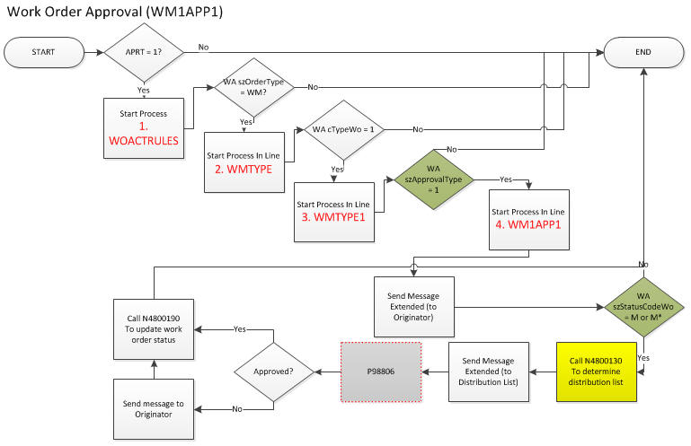
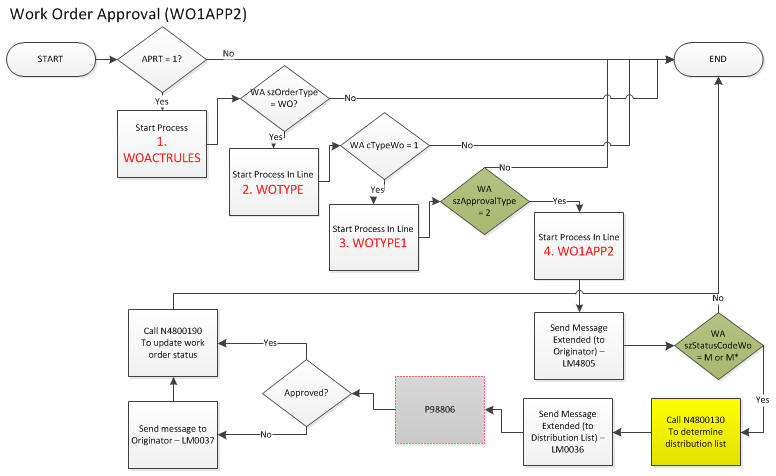
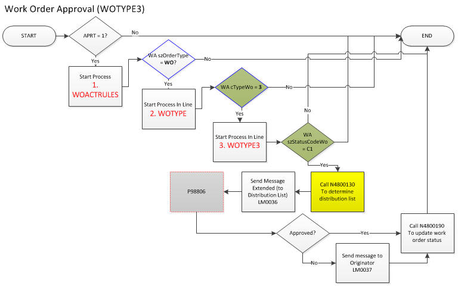

The purpose of this document is to give easier understanding of Work Flow in Work Order Approval. The implmentation for this module is very much different from others because we, Oracle, provide sample codes which requires some adjustment to meet your business requirement. So this document will be focusing on as-is routine of work order workflow (i.e., Delivered Workflow) which enables you to work on right components to meet your daily business requirement. If possible try to make use of existing process rather than add-on additional process, sub-process and recipient rule.
Note:
Pre-requisite:
Get familiar with Work Order Implementation Guide as below,
See Also:
JD Edwards EnterpriseOne Tools Workflow Tools Guide.
P13714 (CAM - Manage Equipment Work Orders), P17714 (Work Order Revisions)
|--- Start Process(WOACTRULES) after F4801EndDocument gets called
|--- Start Process(WMTYPE)
|--- Start Process(WMTYPE1)
|--- Start Process(WM1APP1)
|--- Call WorkflowWOACTRULESRecipientRules (N4800130, Workflow WOACTRULES Recipient Rules) to set recipient rule
Note:
Below work order workflows available,
| Process | Version | Description | Level | Others |
|---|---|---|---|---|
| WOACTRULES | 1 | Work Order Activity Rules | 1 | Process |
| WMTYPE | 1 | WM Document Type | 2 | Sub-process |
| WMTYPE1 | 1 | WM Type Code 1 | 3 | Sub-process |
| WMTYPE6 | 1 | WM Type Code 6 | 3 | Sub-process |
| WM1APP1 | 1 | WM Type 1 Approval Type 1 | 4 | Sub-process |
| WM1APP2 | 1 | WM Type 1 Approval Type 2 | 4 | Sub-process |
| WOTYPE | 1 | WO Document Type | 2 | Sub-process |
| WOTYPE1 | 1 | WO Type Code 1 | 3 | Sub-process |
| WOTYPE3 | 1 | WO Type Code 3 | 3 | Sub-process |
| WOTYPE6 | 1 | WO Type Code 6 | 3 | Sub-process |
| WO1APP1 | 1 | WO Type 1 Approval Type 1 | 4 | Sub-process |
| WO1APP2 | 1 | WO Type 1 Approval Type 2 | 4 | Sub-process |
Note:
: Before parameters affect the flow of workflow
| Codes | Description 01 | Others |
|---|---|---|
| . | ||
| 1 | Approval Route 1 | |
| 2 | Approval Route 2 | |
| 3 | Approval Route 3 | |
| 4 | Approval Route 4 | |
| 5 | Approval Route 5 |
Note: This value can be set through associated processing option which can be overridden at form level which you are on.
| Codes | Description 01 | Description 02 | Others |
|---|---|---|---|
| . | |||
| 1 | Maintenance Order | ||
| 2 | R & D | ||
| 3 | Capital Project | ||
| 5 | Emergency Order | ||
| 6 | Preventive Maintenance Order | ||
| 9 | Standing W.O. - Do not Delete | ||
| B | Marketing | ECO | |
| C | Cost Improvement | ECO | |
| D | Design Work - ETO | ||
| E | Plant Work - ETO | ||
| G | Governmental/Regulatory | ECO | |
| M | Model W.O. - Eq Mgmt | X Maintenance Model Order | |
| P | Project | ||
| R | Rework Order | ||
| S | Shop Order | ||
| T | Tool Order | ||
| U | Preventive Maintenance | S&WM | |
| W | Case | ||
| X | Depot Repair | S&WM | |
| Y | On-site Repair | S&WM | |
| Z | Advanced Exchange | S&WM |
(WK) Workflow Key: DOCO (Work Order Number)
(WA) Workflow attribute
| Values | Dir | Parameter | Alias | Others |
|---|---|---|---|---|
| FC Order Type_DCTO | IN |
szOrderType[3] | DCTO | (EN, WM or WO) |
| FC Type_TYPS | IN | cTypeWo | TYPS | UDC 00/TY (1, 3 or 6) |
| FC Approval Type_APRT | IN | szApprovalType[4] | APRT | UDC 48/AP (1 or 2) |
| FC Status_SRST | IN | szStatusCodeWo[3] | SRST | UDC 00/SS - Work Order Status. Only limited status code (M, M* and C1) |
| <NOT Assigned> | cApprovalActionCode | APPRACT | ||
| FC Branch_MMCU | IN | szCostCenterAlt[13] | MMCU | |
| FC Est. Amount_AMTO | IN | mnAmountOriginalDollars | AMTO | |
| FC Originator | IN | mnAddNoOriginator | ANO | |
| FC Originator | IN | mnDistributionList | AN8 | Note that Originator is assigned to Distribution List |
| WFS | IN | szOrgTypeStructure[4] | OSTP |
| Parameter Name | Data Item | Date Type | Req | I/O | Others |
|---|---|---|---|---|---|
| szApprovalType | APRT | char | O | I | UDC 48/AP (1 or 2) |
| szStatusCodeWo | SRST | char | O | I | UDC 00/SS - Work Order Status |
| mnDistributionList | AN8 | MATH_NUMERIC | O | I/O | Hard coded through N4800130 |
| mnWorkOrder | DOCO | MATH_NUMERIC | O | I | |
| szProcessName | PROCNAME | char | O | I | Currently WM1APP1, WM1APP2, WO1APP1 and WO1APP2 |
| Parameter Name | Data Item | Data Type | Req | I/O | Others |
|---|---|---|---|---|---|
| mnDocumentOrderInvoiceE | DOCO | MATH_NUMERIC | O | ||
| szOrderType | DCTO | char | |||
| cTypeWo | TYPS | char | |||
| szStatusCodeWo | SRST | char | |||
| szApprovalType | ARRT | char | UDC 48/AP | ||
| cApprovalFlag | EV01 | char | |||
| cErrorCode | EV02 | char | |||
| szProcessName | PROCNAME | char |
Below are available process shipped with.
Case 1 (OrderType = EN, TypeWo = N/A, ApprovalType = N/A)
Note
Case 2 (OrderType = WM, TypeWo = 1, ApprovalType = 1)

Case 3 (OrderType = WM, TypeWo = 1, ApprovalType = 2)

Case 4 (OrderType = WM, TypeWo = 6, ApprovalType = N/A)

Note
Case 5 (OrderType = WO, TypeWo = 1, ApprovalType = 1)

Note
Case 6 (OrderType = WO, TypeWo = 1, ApprovalType = 2)

Note
Case 7 (OrderType = WO, TypeWo = 3, ApprovalType = N/A)

Note
Case 8 (OrderType = WO, TypeWo = 6, ApprovalType = N/A)

Note
Question 1> According to <Document 1501744.1> - E1: 13/17: Workflow Process Setup and Execution in 9.0 Forward, the distribution list (7384 and 7405) is hard coded in the Named Event Rules (NER) Workflow WOACTRULES. Is it possible to change the Distribution groups in the NER to the desire group?
Answer 1> In case you have more complex distribution/receipient rule then you may modify NER WOACTRULESRecipientRules (N4800130, Workflow WOACTRULES Recipient Rules) for your own risk.
Question 2> We want to base the workflow to trigger to be same as F43008. Can we include the Branch/Plant field in the distribution group?
Answer 2>
As we can see from E1: 43: Approval Processing FAQ (P4310 / P43008 / P43080 / P43081 /P43280 / P012503 ) (Doc ID 625444.1), the workflow in Procurement is not native workflow. We describe it as workflow because it is making use of SendMessage() API which belongs to workflow kernel through table trigger in F4209.
The way it triggers workflow in P17714/P13714 is simpler because it will be triggered more dynamically by specifying ApprovalType as a data. For instance, in P17714/W17714A there is column named Approval Type (APRT) which is UDC 48/AP where you can choose from 1 to 5 for predefined workflow.
Question3> Also,would like to know as how can we call the customized NER? Do we need to modify the existing Work Order application -P48201P13700 to call the customized NER?
Answer 3>
No you do not have to change the calling routine of NER WorkflowWOACTRULESRecipientRules (N4800130, Workflow WOACTRULES Recipient Rules). Change will affect the outcome as below,
1. Change Distribution list through Named Event Rule design
2. Build update server package and deploy it to server
Question 4>
Please update if we can make it work on the Work Order types as it is based on order type-1 and 6 only.
What needs to be done if we wan to trigger it for other WM and WO work order and work order types-1 and 6?
Answer 4>
3 factors affecting workflow process and sub-process triggering as below,
Question 5> Do we need to customize the work order application-P48201 to call the customized N4800130? How the standard application-P48201 recognize how to call the modified version of N4800130? Do we need to customize the work order application-P48201 to call the customized N4800130?
Answer 5> No. You do not have to modify calling routine to get valid distribution list. For this example, P48201 is entry form and actual application can be vary depending on the processing option you have set.
Question 6> How the standard application-P48201 recognize how to call the modified version of N4800130?
Answer 6> You do not have to modify any, so long as it meets combination of szOrderType (EN, WM and WO), cTypeWo(1, 3, 6) and szApprovalType (1 and 2) it will be called.
Question 7>Why work order which is pending approval status allow users to attach part list and to issue material? How to prevent user from attaching part list?
Answer 7> Not to allow user to modify any of pending work order Lock Flag in Work Order Activity Rule must be set up correctly.
Lock Flag (EQW2 ): A code that determines whether a work order can be changed at a particular status. The lock applies to records in both the Work Order Master table (F4801) and the Work Order Instruction table (F4802). Values are:
Question 8> If we remove the hard coding of the 2 distribution lists and add 10 more distribution lists, then how we can link the Branch/Plant to the distribution group? For example if I create a maintenance order from P48201,P13714 then based on the branch/plant, workflow has to be triggered based on the branch/plant (M30) and link to the distribution group (9999), how we can link the branch/plant (M30) with the distribution group (9999)?
Answer 8>
Currently there is no repository for this information because this is unique requirement (though it may be useful for other customer) and P43008 has different purpose). If you can store MCU by distribution (or with additional information) in your custom table then you can make use of in same NER N4800130 -Workflow WOACTRULES Recipient Rules as below,
<Internal_Only>To be updated with more detail later on </Internal_Only>